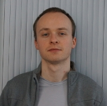

|
|
| Physical address | Centre de recherche Inria Nancy-Grand Est, Pareo team |  |
| 54600 Villers-lès-Nancy |
| France |
| Phone | (+33) (0)3 54 95 84 05 |
| Office | C307 |
| Email | xy.z@{inria,loria}.fr or x-y.z@univ-lorraine.fr |
| with x → jean, y → christophe and z → bach |
| Public key | EA19F34E / Fingerprint=A8C3 C208 1C6A 209B DE2A 2D6C 520E 0E85 EA19 F34E |
| (former one) | 5F96B01C / Fingerprint=6B01 787A A62D D8FF 7CAA 8601 838F E373 5F96 B01C |
| Jabber (IM) | jc.bach@im.apinc.org |
| Tox ID | BCD619585BDFB2426EFEB9622E7C4C7FF2D78459AF4CE2D18864B8B392F07C6A82117456EA95 |
Introduction
Since November 2010, I am a PhD student at LORIA working on models
transformations under the supervision of Pierre-Étienne Moreau and Marc Pantel in the Pareo
team. In the context of my PhD, I am involved in the Quarteft project, funded by FNRAE (Fondation de Recherche pour
l'Aéronautique et l'Espace / Research Foundation for Aeronautics and Space)
From November 2010 to October 2013, I was funded by Inria. Since November 2013, I have
an ATER contract at the FST of Université de Lorraine.
Previously, I graduated from the ESIAL -Software Engineering
specialization- (now known as TELECOM
Nancy), then I have worked for two years as an IT security engineer
at Advens, an IT security services
company located in Lille.
I also have worked for two years on the Tom compiler as development
engineer in the Pareo team.
For the 2014-2015 year, I will have an ATER contract at the university of Lille 1.
Research, publications and talks:
- You can find more information about my research topics, my publications and talks on this page.
- On DBLP
Teaching:
In addition to my PhD I taught at the École des Mines in Nancy as
teaching assistant (2010-2013). I currently teach at the computer science
department of Sciences
and Technologies Faculty as ATER (2013-2014). For detailed
information, please see this page.
Misc:
I have been elected to represent PhD students, temporary researchers and
engineers within the laboratory council. There is a meeting once every two
months. If you have problems, remarks or questions for laboratory council,
please send me an email and I will transmit it (anonymously) during the next
meeting.
Past laboratory council meetings:
- April, 18th 2013 at 8:30am: first meeting
- May, 21st 2013 at 10.00am: a special laboratory council meeting, dedicated to ATER (Temporary Teaching and Research Assistant)
- June, 18th 2013 at 10.00am [canceled, reported to July, 2nd 2013 at 10.00am]
- October, 8th 2013 at 10.00am
- December, 10th 2013 at 10.00am
- February, 4th 2014 at 10.00am
- February, 28th 2014 at 2.00pm: a special laboratory council meeting dedicated to organization when hiring a professor assistant.
- April, 15th 2014 at 10.00am
- June, 27th 2014 at 2.00pm
I leave the laboratory, therefore I will resign. A new election will stand in Sebtember or October and the remaining representative is Stéphane Glondu (stephane _dot_ glondu _at_ inria.fr).
Apart my research and teaching, I have interest in other activities as detailed on the following page.
Special thanks to Clément Hurlin and Paul Brauner who allowed me to use their css and the design of their personal pages :)
|
FR
|
Last modification: 2014-08-18
|
|
|